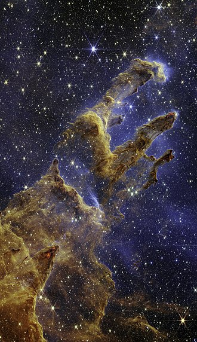

Galaxy
A galaxy is a system of stars, stellar remnants, interstellar gas, dust, and
dark matter bound together by gravity. The word is derived from the Greek
galaxias (γαλαξίας), literally 'milky', a reference to the Milky Way galaxy that
contains the Solar System. Galaxies, averaging an estimated 100 billion stars,
range in size from dwarfs with less than a hundred million stars, to the largest
galaxies known – supergiants with one hundred trillion stars, each orbiting its
galaxy's center of mass. Most of the mass in a typical galaxy is in the form of
dark matter, with only a few percent of that mass visible in the form of stars
and nebulae. Supermassive black holes are a common feature at the centres of galaxies.
Galaxies are categorized according to their visual morphology as elliptical,
spiral, or irregular.Many are thought to have supermassive black holes at their
centers. The Milky Way's central black hole, known as Sagittarius A*, has a mass
four million times greater than the Sun.
It is estimated that there are between 200 billion(2×1011) to 2 trillion
galaxies in the observable universe. Most galaxies are 1,000 to 100,000 parsecs
in diameter (approximately 3,000 to 300,000 light years) and are separated by
distances on the order of millions of parsecs (or megaparsecs). For comparison
, the Milky Way has a diameter of at least 26,800 parsecs (87,400 ly) and is
separated from the Andromeda Galaxy (with diameter of about 152,000 ly), its
nearest large neighbor, by 780,000 parsecs (2.5 million ly.)
